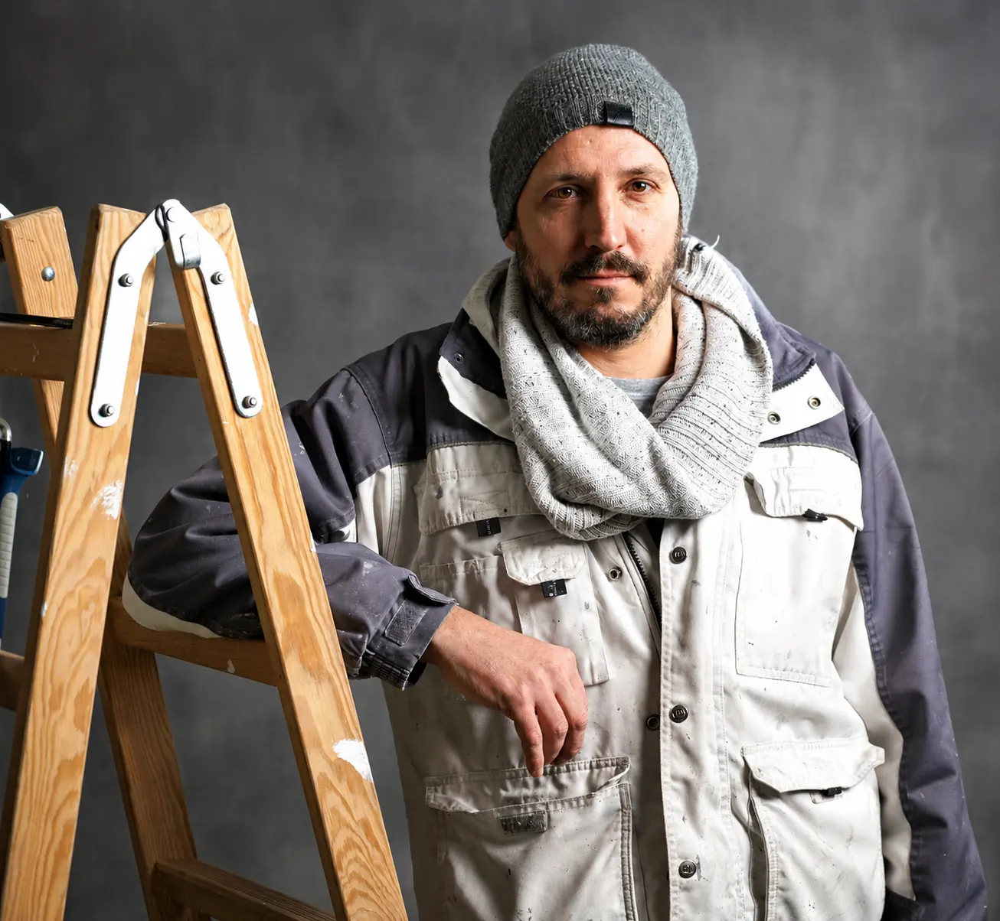
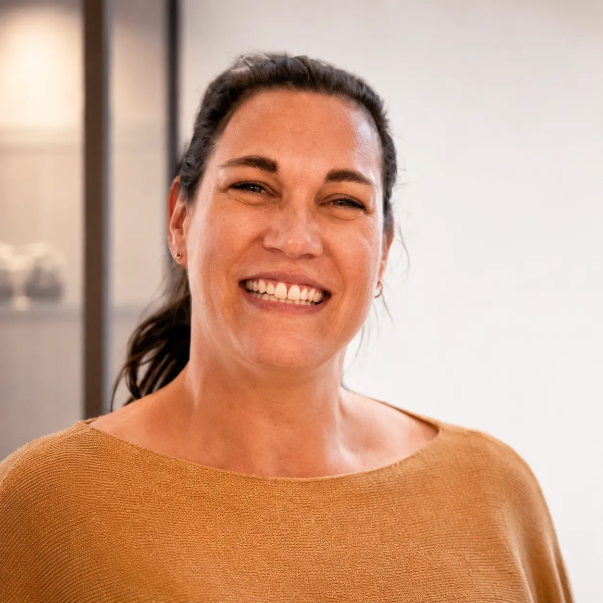

Arne Deseure
Vakmanschap als fundament
Al meer dan 25 jaar leeft Arne Deseure voor het schildersvak. Wat begon als een passie, groeide uit tot een carrière waarin vakkennis, kwaliteit en voortdurende bijscholing centraal staan in alles wat hij doet.
Als meewerkend zaakvoerder binnen SDAD bewaakt Arne dagelijks de kwaliteit van de uitvoering. Hij volgt projecten op, ondersteunt het team op de werf en deelt zijn ervaring met de vakmensen met wie hij samenwerkt.
Daarnaast blijft hij zich verdiepen in nieuwe technieken, materialen en afwerkingsmethodes, zodat SDAD blijft inspelen op de nieuwste ontwikkelingen binnen het vak.
Zijn jarenlange ervaring en doorgedreven kennis vormen vandaag nog steeds een van de fundamenten waarop SDAD gebouwd is.

Lies Nuyttens
De verbindende schakel
Sinds Lies in 2017 mee in de zaak stapte, bouwt ze dagelijks mee aan de groei van SDAD. Vandaag vormt ze de verbindende schakel tussen klanten, medewerkers en organisatie.
Voor veel klanten is Lies het eerste aanspreekpunt binnen SDAD. Ze begeleidt projecten van eerste kennismaking tot oplevering, denkt mee over kleuren en afwerkingen en zorgt voor een duidelijke communicatie gedurende het volledige traject.
Daarnaast staat ze in voor de dagelijkse organisatie van het bedrijf. Van planning en personeelsopvolging tot administratie en klantencontacten: Lies zorgt ervoor dat zowel klanten als medewerkers kunnen rekenen op een vlotte en gestructureerde aanpak.
Met haar gedrevenheid, betrokkenheid en ondernemingszin bouwt ze samen met Arne verder aan één duidelijke ambitie: een bedrijf uitbouwen waar kwaliteit, vertrouwen en mensen centraal staan.